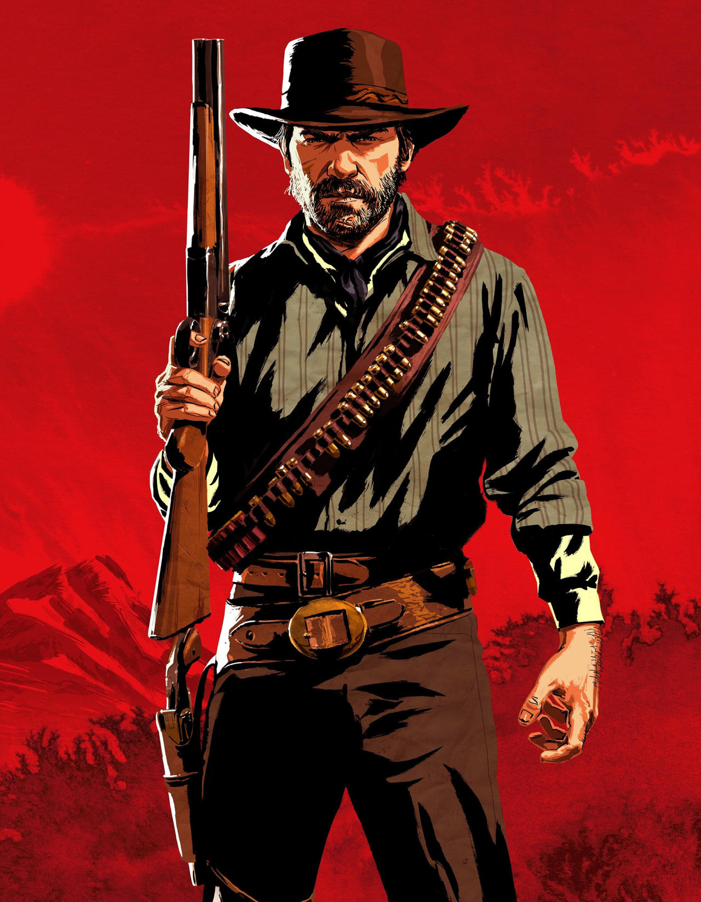

Arthur Morgan

Arthur Morgan é o protagonista de Red Dead Redemption 2,
membro da gangue de Dutch van der Linde e um dos personagens
mais marcantes do genêro Velho Oeste.
Sobre o Personagem
Arthur Morgan é um fora da lei que faz parte da gangue
Van der Linde. Durante a história, ele enfrenta diversos
desafios enquanto começa a questionar sua vida e as escolhas
que fez ao longo dos anos.
Caracteristicas
- Excelente atirador
- Habilidoso com cavalos
- Experiente em combate
- Leal aos membros da equipe
- Conhecido pelo senso de humor
Habilidades
- Uso de armas de fogo
- Caça e sobrevivência
- Olhos da morte
- Combate corpo a corpo
Curiosidades
- Arthur é o personagem principal de Red Dead Redemption 2
- O jogador pode influenciar o nivel de honra do Arthur dependendo da maneira de jogar
- Arthur é um dos primeiros membros da gangue Van der Linde
Personagem de Red Dead Redemption 2